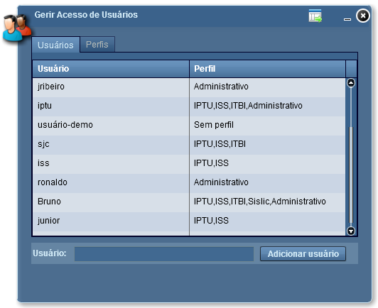
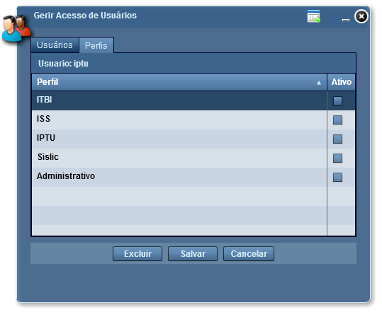

Gerir Acesso de Usuários
A ferramenta Gerir Acesso de Usuários lista todos os usuários cadastrados, o que possibilita ao administrador adicionar ou remover perfis aos cadastros existentes na lista, e ainda adicionar novos usuários e seus respectivos perfis.

Lista de Usuários: exibe os usuários e seus respectivos perfis;
Adicionar Usuário: possibilita adicionar novos usuários;

Lista de Perfis: exibe os perfis existentes e quais estão associados a determinado usuário;
Salvar: salva as modificações realizadas no perfil;
Cancelar: cancela qualquer modificação realizada;
Fechar: fecha ferramenta Gerir Acesso de Usuários;
Minimizar: minimiza ferramenta Gerir Acesso de Usuários;
Exportar resultados: Exporta a lista de usuários.
Obs.: Somente o usuário administrador terá acesso ao Gerir Acesso de Usuários.